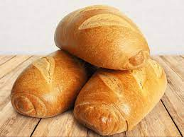

Receta del pan
Ingredientes:
de harina de trigo (puedes usar harina integral o harina de fuerza según tus preferencias)
300ml de agua tibia
7g de levadura seca (o 20g de levadura fresca)
1 cucharadita de sal
1 cucharadita de azúcar (opcional, ayuda a activar la levadura)
Instrucciones:
Preparación de la levadura: En un recipiente pequeño, mezcla la levadura con el agua tibia y el azúcar. Deja reposar durante 5-10 minutos hasta que la mezcla esté burbujeante y activa. Esto indica que la levadura está lista para ser usada.
Mezclar los ingredientes secos: En un tazón grande, mezcla la harina y la sal.
Combinación de ingredientes: Haz un hueco en el centro de la harina y vierte la mezcla de levadura activada. Con una cuchara de madera o una espátula, incorpora gradualmente la harina desde los lados hasta que se forme una masa pegajosa.
Amasado: Espolvorea un poco de harina sobre una superficie limpia y comienza a amasar la masa durante unos 10-15 minutos, o hasta que esté suave y elástica. Agrega más harina si es necesario para evitar que la masa se pegue demasiado.
Primer levado: Forma la masa en una bola y colócala en un recipiente grande ligeramente engrasado. Cubre el recipiente con un paño limpio y deja reposar en un lugar cálido durante aproximadamente 1 hora, o hasta que la masa haya duplicado su tamaño.
Segundo amasado: Una vez que la masa haya duplicado su tamaño, vuelve a amasarla brevemente para desgasificarla.
Formación del pan: Forma la masa en la forma deseada para tu pan: puedes hacer un pan redondo, alargado, en molde, etc.
Segundo levado: Coloca el pan en una bandeja de horno o en un molde para pan previamente engrasado. Cubre nuevamente con un paño limpio y deja reposar durante otros 30-45 minutos, o hasta que vuelva a aumentar de tamaño.
Precalentar el horno: Mientras el pan está en su segundo levado, precalienta el horno a 220°C.
Horneado: Una vez que el pan haya vuelto a aumentar de tamaño, haz unos cortes en la parte superior con un cuchillo afilado o unas tijeras de cocina. Esto permite que el pan se expanda correctamente durante el horneado. Hornea en el horno precalentado durante 25-30 minutos, o hasta que esté dorado y suene hueco al golpear la parte inferior.
Enfriar: Deja que el pan se enfríe sobre una rejilla antes de cortarlo. ¡Y listo! Ahora puedes disfrutar de tu delicioso pan casero.
Leer másReceta del pastel
Ingredientes:
200g de mantequilla a temperatura ambiente
200g de azúcar
4 huevos
200g de harina de trigo
2 cucharaditas de polvo de hornear
cucharadita de esencia de vainilla
Una pizca de sal
3-4 cucharadas de leche (opcional, para ajustar la consistencia de la masa)
Instrucciones:
Precalentar el horno: Precalienta el horno a 180°C y engrasa y enharina un molde para pastel.
Preparación de la masa: En un tazón grande, bate la mantequilla ablandada con el azúcar hasta que la mezcla esté suave y cremosa. Puedes usar una batidora eléctrica o hacerlo a mano con una espátula.
los huevos: Agrega los huevos uno por uno, batiendo bien después de cada adición. Asegúrate de que estén completamente incorporados antes de añadir el siguiente huevo.
Añadir la vainilla: Incorpora la esencia de vainilla a la mezcla de mantequilla y huevos, mezclando bien.
Tamizar los ingredientes secos: En otro tazón, tamiza la harina, el polvo de hornear y la sal juntos.
Combinar los ingredientes: Agrega gradualmente los ingredientes secos a la mezcla de mantequilla y huevos, mezclando a baja velocidad hasta que la masa esté suave y homogénea. Si la masa parece demasiado espesa, puedes agregar unas cucharadas de leche para obtener la consistencia deseada.
Verter la masa: Vierte la masa en el molde preparado y extiéndela uniformemente con una espátula.
Horneado: Hornea en el horno precalentado durante aproximadamente 25-30 minutos, o hasta que un palillo insertado en el centro del pastel salga limpio.
Enfriar y decorar: Una vez horneado, deja que el pastel se enfríe en el molde durante unos minutos antes de transferirlo a una rejilla para que se enfríe completamente. Puedes decorar el pastel con glaseado, crema batida, frutas frescas o simplemente espolvorear azúcar glass por encima.
Leer másReceta de los postres
Ingredientes:
500g de fresas frescas, lavadas y cortadas en rodajas
1 taza de crema batida (puedes usar crema de leche o nata para montar)
2 cucharadas de azúcar (o al gusto)
1 cucharadita de extracto de vainilla (opcional)
Hojas de menta fresca para decorar (opcional)
Instrucciones:
Preparar las fresas: Lava bien las fresas y córtalas en rodajas. Puedes reservar algunas rodajas para decorar al final si lo deseas.
Preparar la crema: En un tazón grande, bate la crema batida con el azúcar y el extracto de vainilla (si estás usando) hasta que se formen picos suaves. Asegúrate de no batir en exceso para evitar que la crema se vuelva demasiado densa.
Montar el postre: En copas individuales o en un plato para servir, coloca una capa de fresas cortadas en el fondo. Luego, agrega una capa de crema batida por encima. Repite este proceso hasta que hayas utilizado todas las fresas y la crema, terminando con una capa de crema en la parte superior.
Decorar: Decora el postre con algunas rodajas de fresa reservadas y hojas de menta fresca si lo deseas. Esto agregará un toque fresco y colorido al postre.
Refrigerar: Cubre el postre con film transparente y refrigéralo durante al menos 1 hora antes de servir. Esto permite que los sabores se mezclen y que la crema se asiente un poco.
Servir: Una vez que el postre haya reposado en el refrigerador, retíralo y sírvelo frío. ¡Disfruta de este delicioso y refrescante postre de fresas con crema!